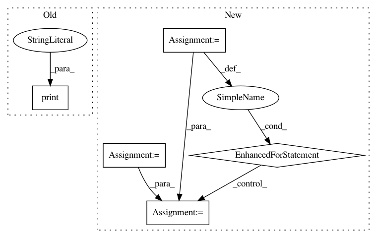

532096f9f9a96f689ee644cdb3560def98a4c410,auto_ml/predictor.py,Predictor,_get_xgb_feat_importances,#Predictor#Any#,279
Before Change
print(fscore)
fscore_list = [[int(k[1:]), v] for k, v in fscore.viewitems()]
print("fscore_list")
print(fscore_list)
sorted_fscore = fscore_list.sort(key=lambda x: x[0])
print("fscore_list after sorting")
print(fscore_list)
After Change
feature_infos = []
sum_of_all_feature_importances = 0.0
for idx_and_result in fscore_list:
idx = idx_and_result[0]
// Use the index that we grabbed above to find the human-readable feature name
feature_name = trained_feature_names[idx]
feat_importance = idx_and_result[1]
// If we sum up all the feature importances and then divide by that sum, we will be able to have each feature importance as it"s relative feature imoprtance, and the sum of all of them will sum up to 1, just as it is in scikit-learn.
sum_of_all_feature_importances += feat_importance
feature_infos.append([feature_name, feat_importance])
sorted_feature_infos = sorted(feature_infos, key=lambda x: x[1])
print("Here are the feature_importances from the tree-based model:")
print("The printed list will only contain at most the top 50 features.")
In pattern: SUPERPATTERN
Frequency: 3
Non-data size: 5
Instances
Project Name: ClimbsRocks/auto_ml
Commit Name: 532096f9f9a96f689ee644cdb3560def98a4c410
Time: 2016-08-20
Author: ClimbsBytes@gmail.com
File Name: auto_ml/predictor.py
Class Name: Predictor
Method Name: _get_xgb_feat_importances
Project Name: AlexEMG/DeepLabCut
Commit Name: 199f387b50df1f32ded6ac5d54b68f08f009661b
Time: 2019-09-19
Author: amathis@fas.harvard.edu
File Name: deeplabcut/create_project/new.py
Class Name:
Method Name: create_new_project
Project Name: NifTK/NiftyNet
Commit Name: c8b28432a637a780eed96547260722ff3dede57e
Time: 2017-10-04
Author: wenqi.li@ucl.ac.uk
File Name: niftynet/engine/sampler_selective.py
Class Name:
Method Name: rand_choice_coordinates